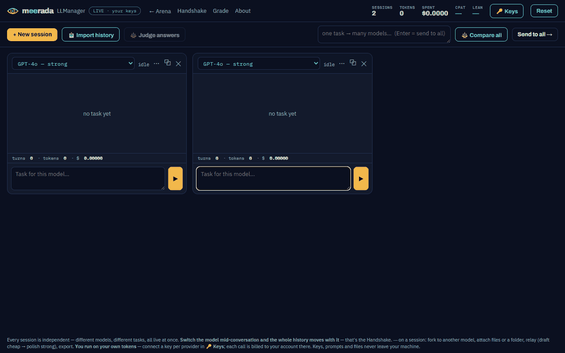

<meta charset="utf-8">
<script src="assets/family.js" defer></script>
<meta name="viewport" content="width=device-width, initial-scale=1">
<title>Meerada Handshake</title>
<link rel="canonical" href="https://meerada.app/handshake.html">
<link rel="icon" href="logo.svg" type="image/svg+xml">
<meta name="description" content="Meerada Handshake — switch AI models without losing a word. Import your Claude Code, Claude.ai or ChatGPT history and continue on any model; for companies, a measured migration of your real AI workload: where to move, what you save, where quality breaks.">
<meta property="og:type" content="website"><meta property="og:url" content="https://meerada.app/handshake.html">
<meta property="og:title" content="Meerada Handshake — switch models, keep the history"><meta property="og:description" content="Your conversations should not belong to the model you started them in. Import, switch, continue — and for companies, a measured migration report.">
<meta property="og:image" content="https://meerada.app/assets/og.png"><meta name="twitter:card" content="summary_large_image">
<script data-goatcounter="https://meerada.goatcounter.com/count" async src="//gc.zgo.at/count.js"></script>
<link rel="stylesheet" href="https://fonts.googleapis.com/css2?family=Archivo:wght@700;800;900&family=IBM+Plex+Sans:wght@400;500;600&family=IBM+Plex+Mono:wght@400;600&display=swap">
<style>
  :root{--ground:#FFFFFF;--panel:#F7F9FC;--panel2:#EEF2F7;--line:#DDE4EE;--text:#0F172A;--muted:#5B6B82;--teal:#0E8A7E;--amber:#D48A00;--good:#1E8E4C;--bad:#C8403A;}
  *{box-sizing:border-box;} body{margin:0;background:var(--ground);color:var(--text);font-family:"IBM Plex Sans",system-ui,sans-serif;line-height:1.55;}
  a{color:inherit;text-decoration:none;} .wrap{max-width:1040px;margin:0 auto;padding:0 1.1rem;} .teal{color:var(--teal)}
  header{text-align:center;padding:3rem 0 1rem;} .kicker{display:inline-block;font-family:"IBM Plex Mono",monospace;font-size:.72rem;color:var(--good);border:1px solid #1E8E4C;border-radius:999px;padding:.2rem .7rem;}
  h1{font-family:"Archivo";font-weight:900;font-size:clamp(2rem,5.2vw,3.2rem);letter-spacing:-.03em;line-height:1.05;margin:.5rem 0 .5rem;} h1 em{font-style:normal;color:var(--teal);}
  .lede{color:var(--muted);max-width:740px;margin:0 auto 1.3rem;font-size:1.06rem;}
  .btn{display:inline-block;font-family:"Archivo";font-weight:700;font-size:.92rem;padding:.6rem 1.15rem;border-radius:9px;border:1px solid var(--line);color:var(--text);} .btn.primary{background:#F2B84B;color:#171205;border-color:transparent;} .btn.ghost{border-color:var(--teal);color:var(--teal);}
  section{padding:1.6rem 0;} h2{font-family:"Archivo";font-weight:800;font-size:1.5rem;margin:0 0 .4rem;text-align:center;} .h2sub{color:var(--muted);text-align:center;max-width:720px;margin:0 auto 1.3rem;}
  .gif{display:block;max-width:900px;width:100%;margin:0 auto;border-radius:14px;border:1px solid var(--line);box-shadow:0 12px 40px rgba(15,23,42,.12)}
  .cards{display:grid;grid-template-columns:repeat(3,1fr);gap:1rem;} @media(max-width:820px){.cards{grid-template-columns:1fr}}
  .fcard{background:var(--panel);border:1px solid var(--line);border-radius:14px;padding:1.2rem 1.25rem;} .fcard .ic{font-size:1.5rem;} .fcard h3{font-family:"Archivo";font-size:1.05rem;margin:.5rem 0 .35rem;} .fcard p{color:var(--muted);font-size:.9rem;margin:0;}
  .split{display:grid;grid-template-columns:1fr 1fr;gap:1rem;} @media(max-width:760px){.split{grid-template-columns:1fr}}
  .tier{border:1px solid var(--line);border-radius:16px;padding:1.3rem 1.4rem;background:var(--panel);} .tier h3{font-family:"Archivo";font-size:1.15rem;margin:.2rem 0 .5rem;} .tier ul{list-style:none;padding:0;margin:0 0 1rem;} .tier li{padding:.26rem 0;font-size:.9rem;} .tier li::before{content:"✓ ";color:var(--good);} .tier.b2b{border-color:#E0A93A;box-shadow:0 0 0 1px rgba(242,184,75,.25) inset}
  .note{color:var(--muted);font-size:.82rem;text-align:center;margin-top:.8rem}
</style>

<header><div class="wrap">
  <span class="kicker">IN THE APP · FREE · FOR COMPANIES AS A MEASURED SERVICE</span>
  <h1>🤝 Handshake<br><em>Switch models without losing a word.</em></h1>
  <div class="lede">Your conversations should not belong to the model you started them in. Import your Claude Code, Claude.ai or ChatGPT history, continue on any model, and switch again mid-thought — the whole history, the attached files and a visible trail of every hand-off move with you. For companies, the same engine measures a migration of your real workload before you commit to it.</div>
  <div style="display:flex;gap:.7rem;justify-content:center;flex-wrap:wrap">
    <a class="btn primary" href="manager.html#get">Get the app — the Handshake is inside</a>
    <a class="btn ghost" href="index.html#handshake">Plan a migration on the exchange</a>
  </div>
</div></header>

<section><div class="wrap">
  
  <div class="note">Real recording: a Claude Code session imported into the Manager, continued on GPT, then handed to a second model — the history travels.</div>
</div></section>

<section><div class="wrap">
  <h2>What moves with you</h2>
  <div class="cards">
    <div class="fcard"><div class="ic">📥</div><h3>The history</h3><p>Claude Code sessions found on your machine in one click; Claude.ai and ChatGPT exports; any transcript. It becomes a live session on the model you choose.</p></div>
    <div class="fcard"><div class="ic">📎</div><h3>The context</h3><p>Attached files and folders travel with the conversation. The new model sees what the old one saw.</p></div>
    <div class="fcard"><div class="ic">🧭</div><h3>The trail</h3><p>Every hand-off is recorded on the session: which turn, from which model, to which. You always know who said what.</p></div>
  </div>
</div></section>

<section><div class="wrap">
  <h2>Two ways to use it</h2>
  <div class="split">
    <div class="tier">
      <h3>For you — in the Manager, free</h3>
      <ul><li>Import from Claude Code, Claude.ai, ChatGPT</li><li>Switch the model in a dropdown; the session continues</li><li>Fork to a second model and compare side by side</li><li>Relay: a cheap model drafts, a strong one polishes</li><li>Cross-check the answers with a neutral jury</li><li>Export the transcript as Markdown — portability both ways</li></ul>
      <a class="btn primary" href="manager.html#get">Download</a>
    </div>
    <div class="tier b2b">
      <h3>For companies — the Handshake Report</h3>
      <ul><li>Your real AI workload, replayed on candidate models</li><li>Where to move, what you save, where quality breaks — measured, not guessed</li><li>Verified by programs where possible, by the <a class="teal" href="judge.html">Judge</a> layer where not</li><li>Only metadata leaves your machine; content stays in your tenant</li><li>A written plan with numbers you can reproduce</li></ul>
      <a class="btn ghost" href="mailto:rave.mm@gmail.com?subject=Handshake%20Report">Ask for a report</a>
    </div>
  </div>
  <div class="note">The interactive migration planner on the exchange (<a class="teal" href="index.html#handshake">here</a>) shows the shape of the report: cost, quality gap, latency, verdict — on live measured models.</div>
</div></section>
